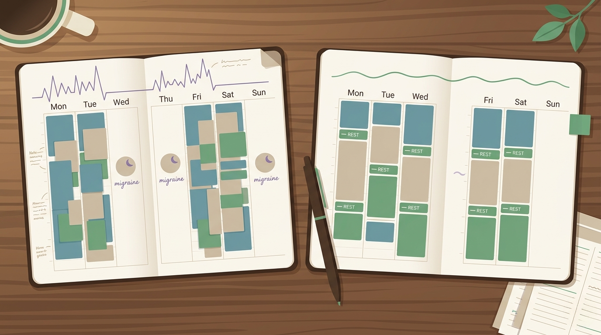
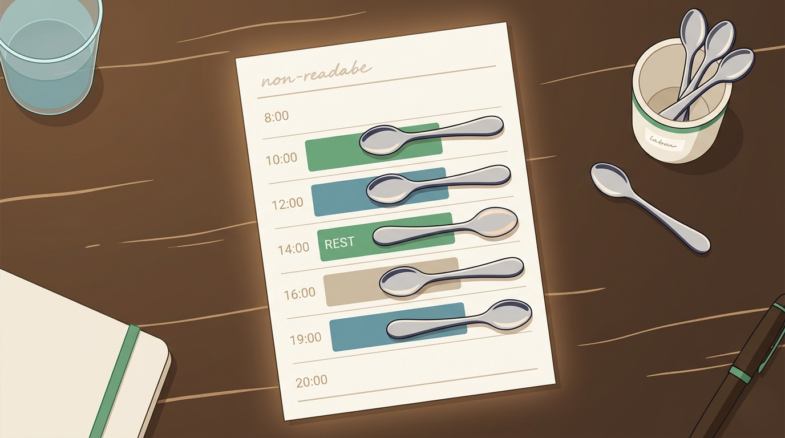

By Rustam Iuldashov
30 years lived experience with chronic migraine | Sources: 17 peer-reviewed references including Nature Reviews Neurology, Neurology (n=4,802 prodrome events), BMJ (RCT, n=232), Clinical Journal of Pain (n=257), Physical Therapy (n=311) | Last updated: May 22, 2026
Medical Review: This content is based on peer-reviewed research from Nature Reviews Neurology, Neurology, Neurology Clinical Practice, BMJ, Cephalalgia, Clinical Journal of Pain, Physical Therapy, Disability and Rehabilitation, Patient Education and Counseling, AAOHN Journal, Current Pain and Headache Reports, and Seminars in Pediatric Neurology.
Important Notice: This article is for informational purposes only and does not replace professional medical advice. Pacing is a self-management strategy supported by peer-reviewed research, but it should complement — not replace — care from a neurologist or headache specialist. Always discuss treatment decisions with your healthcare provider.
Key Takeaways
- Spoon theory, coined in 2003 to explain lupus, describes how chronic illness forces you to budget a finite daily supply of energy — and it fits migraine unusually well[1]
- The migraine brain runs at a measurable energy deficit between attacks, with abnormalities in mitochondrial function and phosphocreatine reserves[2] [5]
- Overexertion is a well-established trigger — but so is its opposite: the post-stress “let-down” raises attack risk nearly five-fold in the six hours after relaxation[10]
- Fatigue is the second most common prodromal symptom and appears about four hours before the headache — your brain’s earliest warning that the energy envelope has been breached[11]
- Pacing isn’t one skill but five: consistency, planning, adjustment, progression, and acceptance. Consistency is most strongly linked to better outcomes[13] [14]
- In headache clinic studies, pacing prevented increases in headache intensity in 70% of patients, shortened attacks in 40%, and was used to prevent onset in 70%[15]
It was 2003. Christine Miserandino sat in a diner with her best friend, who had just asked what it felt like to live with lupus. She looked around, gathered every spoon she could reach, and pushed them across the table.
“Here,” she said. “You have lupus now.”
Then she walked her friend through an ordinary day. Get out of bed — take a spoon. Shower. Make breakfast. Drive to work. Sit through a meeting. By lunchtime, her friend’s hands were empty.
That conversation became an essay. The essay became a metaphor. The metaphor became the way millions of patients now explain chronic illness to the people they love.[1] Spoon theory was born for lupus. But anyone whose body charges them a tax for being alive recognizes it instantly. And no one recognizes it faster than people who live with migraine.
The smaller battery
Healthy brains don’t think about energy. They burn it, replenish it, burn it again. Migraine brains don’t have that luxury.
For two decades, magnetic resonance spectroscopy has measured something the rest of medicine took its time to accept: the migraine brain runs at a real energy deficit, even between attacks.[2] Phosphocreatine — the quick-access fuel cells reach for first — sits lower than in non-migraineurs.[3] ATP regenerates more slowly. Mitochondria, the power plants inside every neuron, sputter.[4] In 2019, a landmark review in Nature Reviews Neurology went further. It argued that migraine itself is a conserved adaptive response — the brain’s emergency mechanism for restoring its own energy balance when reserves run dangerously low.[5]
If that’s true, an attack isn’t a failure of willpower or a punishment for skipping yoga. It’s the brain pulling the emergency brake on a system that’s been overdrawn.
Which is exactly what spoon theory was trying to say all along.
The boom-bust trap
Most people without chronic illness don’t pace themselves. They don’t need to. A good day is a license to do more. A bad day passes.
For migraineurs, that rhythm becomes a trap. Researchers studying chronic fatigue syndrome named it the boom-bust cycle — push hard on the good days, crash on the next.[6] In the late 1990s, psychologist Leonard Jason proposed something heretical at the time: that staying inside your energy limits, rather than constantly testing them, actually expands what you can do over weeks and months. He called it the energy envelope theory.[7] Multiple studies since have shown it reduces symptom severity and improves quality of life in ME/CFS patients.[8]
Migraine falls into the same trap. Overexertion is one of the most consistently reported triggers across decades of research.[9] So is its mirror image — the let-down headache. Researchers at the Montefiore Headache Center asked migraine patients to keep electronic diaries for three months. A sharp drop in stress from one day to the next raised the risk of an attack nearly five-fold within the next six hours.[10] Cortisol, the body’s natural painkiller, plummets when the pressure releases. The brain, already on fumes, gets the bill.
This is why “I’ll relax this weekend” so often becomes Saturday morning in a dark room.

The warning system most patients miss
Here’s the part most patients don’t realize: the migraine brain warns you.
The prodrome — the premonitory phase that arrives hours, sometimes a full day, before the headache — is one of the most carefully studied early-warning systems in neurology. In the recent PRODROME trial, researchers tracked nearly five thousand prodrome events. Fatigue appeared in 50.1% of them, on average four hours before pain began.[11] Neck pain, difficulty concentrating, mood shifts, yawning — all followed similar patterns. In 81.5% of cases, the headache arrived within one to six hours of the warning.[11]
Neurologists now read the prodrome as the hypothalamus — the brain’s energy and homeostasis regulator — going into alarm mode.[12] Orexin, neuropeptide Y, and dopamine systems begin to fluctuate. The prodrome is, quite literally, your brain’s overdraft notice.
Pacing turns that notice into something actionable. Most untreated migraineurs feel the fatigue and push through it. Trained ones feel it and pull back.
⚠️ When pacing isn’t enough — seek medical evaluation
Pacing is a powerful self-management tool, not a substitute for medical care. Contact a healthcare professional or seek urgent evaluation if you experience:
— A sudden, severe “thunderclap” headache that peaks within seconds or minutes — this can signal a vascular emergency unrelated to migraine.
— A new or worsening headache pattern, especially after age 50, or one that differs sharply from your usual attacks.
— Headache accompanied by fever, stiff neck, confusion, seizures, weakness on one side of the body, vision loss, or difficulty speaking.
— Headache that follows a head injury.
— A progressive increase in headache frequency despite consistent pacing — this may indicate medication-overuse headache or migraine progression that requires preventive treatment.
— Fatigue that worsens steadily over weeks regardless of rest, especially with unexplained weight loss, fever, or new symptoms — chronic fatigue with red flags requires a medical workup beyond pacing.
If in doubt, contact your doctor. In a medical emergency, call your local emergency services.
What pacing actually looks like
Pacing sounds simpler than it is. Researchers at the University of Manchester spent more than a decade developing and validating the Activity Pacing Questionnaire for chronic pain and fatigue. They discovered that pacing isn’t one skill, but five:[13]
- Activity consistency — doing roughly the same amount most days, instead of sprinting and crashing.
- Activity planning — scheduling demanding tasks when your reserves are highest, and resting before you need it, not after.
- Activity adjustment — breaking large tasks into smaller pieces with breaks built in.
- Activity progression — slowly expanding your envelope, but only after a stable baseline.
- Activity acceptance — knowing your limits today doesn’t mean accepting them forever.
Of these five, activity consistency turned out to be the one most strongly linked to better symptoms in long-term conditions.[14] The smoother the line, the quieter the brain.

What headache clinics already know
In 2012, a Canadian team published one of the few studies to test pacing specifically in migraine and tension-type headache. Twenty patients at a specialty headache clinic were taught pacing principles by occupational therapists over several months.[15] The results were modest but striking. Seventy percent said pacing prevented increases in headache intensity. Sixty-five percent said it decreased intensity once an attack began. Forty percent said it shortened duration. And 70% reported using pacing to prevent attacks from starting in the first place.[15]
Behavioral interventions — pacing, relaxation, biofeedback, cognitive behavioral therapy — now rest on a research base of over three hundred studies. They are recognized as front-line treatments for chronic migraine by the American Headache Society and the U.S. Headache Consortium.[16] Their effect sizes match those of preventive medication.[17]
Pacing isn’t a soft consolation prize for people who can’t afford triptans. It’s a treatment in its own right.
Spending the spoons you have
The deepest insight in Christine Miserandino’s essay was never about scarcity. It was about choice.
The friend who left the diner that night didn’t leave with less energy. She left understanding that for some people, every choice — shower or breakfast, errand or social plan — costs something measurable, and the budget closes at sunset.
For migraineurs, it closes earlier than most people imagine. But it doesn’t have to close in a darkened room.
The art of pacing isn’t refusing to spend your spoons. It’s spending them on the things that matter, before your brain decides for you. A spoon saved on Tuesday afternoon is the meeting you keep on Thursday. The walk you take on Saturday. The dinner you don’t cancel. The version of yourself you’d like your family to remember.
That is medication of a different kind. And no pharmacy in the world stocks it.
Key Takeaways
- Spoon theory, coined in 2003 to explain lupus, describes how chronic illness forces you to budget a finite daily supply of energy — and it fits migraine unusually well
- The migraine brain runs at a measurable energy deficit between attacks, with abnormalities in mitochondrial function and phosphocreatine reserves
- Overexertion is a well-established trigger — but so is its opposite: the post-stress “let-down” raises attack risk nearly five-fold in the six hours after relaxation
- Fatigue is the second most common prodromal symptom and appears about four hours before the headache — your brain’s earliest warning that the energy envelope has been breached
- Pacing isn’t one skill but five: consistency, planning, adjustment, progression, and acceptance. Consistency is most strongly linked to better outcomes
- In headache clinic studies, pacing prevented increases in headache intensity in 70% of patients, shortened attacks in 40%, and was used to prevent onset in 70%
⚕️ Important Medical Disclaimer
This article is for informational and educational purposes only and does not constitute medical advice, diagnosis, or treatment. The author, Rustam Iuldashov, is not a licensed physician, neurologist, occupational therapist, or healthcare professional. He is a patient advocate with 30 years of personal experience living with chronic migraine.
All clinical claims in this article are sourced from peer-reviewed research published in indexed medical journals. Study designs and sample sizes are noted where applicable.
Pacing is a self-management strategy supported by peer-reviewed evidence, but it works best as part of an individualized treatment plan. If pacing alone does not reduce your migraine burden — or if you notice progression in attack frequency, severity, or duration — speak with a neurologist or headache specialist. Pacing supports medical treatment; it does not replace it. If you are experiencing significant fatigue, mood changes, or psychological distress alongside your migraines, please consult a qualified healthcare professional.
Always consult a qualified healthcare provider for questions about your individual health or migraine treatment decisions. This content was last reviewed for accuracy on May 22, 2026.
References
- Miserandino C. “The Spoon Theory.” But You Don’t Look Sick (2003). Available at: butyoudontlooksick.com. Study design: Foundational personal essay introducing the spoon metaphor in chronic illness communication.
- Sparaco M, Feleppa M, Lipton RB, Rapoport AM, Bigal ME. “Mitochondrial Dysfunction and Migraine.” Cephalalgia, 26(4):361–372 (2006). doi:10.1111/j.1468-2982.2005.01059.x. Study design: Narrative review of MRS, biochemical, imaging, and genetic studies on mitochondrial involvement in migraine.
- Welch KM, Levine SR, D’Andrea G, Schultz LR, Helpern JA. “Preliminary observations on brain energy metabolism in migraine studied by in vivo phosphorus 31 NMR spectroscopy.” Neurology, 39(4):538–541 (1989). doi:10.1212/wnl.39.4.538. Study design: Cross-sectional 31P-NMR spectroscopy study. n=20.
- Yorns WR, Hardison HH. “Mitochondrial dysfunction in migraine.” Seminars in Pediatric Neurology, 20(3):188–193 (2013). doi:10.1016/j.spen.2013.09.002. Study design: Narrative review of mitochondrial mechanisms in migraine pathophysiology.
- Gross EC, Lisicki M, Fischer D, Sándor PS, Schoenen J. “The metabolic face of migraine — from pathophysiology to treatment.” Nature Reviews Neurology, 15:627–643 (2019). doi:10.1038/s41582-019-0255-4. Study design: Comprehensive review reframing migraine as an adaptive response to disturbed brain energy homeostasis.
- Goudsmit EM, Nijs J, Jason LA, Wallman KE. “Pacing as a strategy to improve energy management in myalgic encephalomyelitis/chronic fatigue syndrome: a consensus document.” Disability and Rehabilitation, 34(13):1140–1147 (2012). doi:10.3109/09638288.2011.635746. Study design: Expert consensus document defining pacing principles in ME/CFS.
- Jason LA, Muldowney K, Torres-Harding S. “The Energy Envelope Theory and myalgic encephalomyelitis/chronic fatigue syndrome.” AAOHN Journal, 56(5):189–195 (2008). doi:10.1177/216507990805600502. Study design: Theoretical framework paper introducing energy envelope theory.
- Jason L, Benton M, Torres-Harding S, Muldowney K. “The impact of energy modulation on physical functioning and fatigue severity among patients with ME/CFS.” Patient Education and Counseling, 77(2):237–241 (2009). doi:10.1016/j.pec.2009.02.015. Study design: Prospective cohort study examining energy envelope adherence and outcomes. n=44.
- Pellegrino ABW, Davis-Martin RE, Houle TT, Turner DP, Smitherman TA. “Perceived triggers of primary headache disorders: A meta-analysis.” Cephalalgia, 38(6):1188–1198 (2018). doi:10.1177/0333102417727535. Study design: Meta-analysis of patient-reported headache triggers. 85 studies pooled.
- Lipton RB, Buse DC, Hall CB, Tennen H, Defreitas TA, Borkowski TM, Grosberg BM, Haut SR. “Reduction in perceived stress as a migraine trigger: testing the ‘let-down headache’ hypothesis.” Neurology, 82(16):1395–1401 (2014). doi:10.1212/WNL.0000000000000332. Study design: Prospective electronic diary study tracking stress and migraine onset over 3 months. n=17, 2,011 days observed.
- Karsan N, Bose PR, Thompson C, Newman J, Goadsby PJ. “Characterizing Prodrome (Premonitory Phase) in Migraine: Results From the PRODROME Trial Screening Period.” Neurology Clinical Practice, 14(5):e200359 (2024). doi:10.1212/CPJ.0000000000200359. Study design: Prospective observational analysis. n=4,802 qualifying prodrome events.
- Karsan N, Goadsby PJ. “Biological insights from the premonitory symptoms of migraine.” Nature Reviews Neurology, 14:699–710 (2018). doi:10.1038/s41582-018-0098-4. Study design: Comprehensive review of premonitory phase neurobiology, with focus on hypothalamic mechanisms.
- Antcliff D, Campbell M, Woby S, Keeley P. “Assessing the Psychometric Properties of an Activity Pacing Questionnaire for Chronic Pain and Fatigue.” Physical Therapy, 95(9):1274–1286 (2015). doi:10.2522/ptj.20140405. Study design: Cross-sectional psychometric validation of the 26-item Activity Pacing Questionnaire (APQ-26). n=311.
- Antcliff D, Campbell M, Woby S, Keeley P. “Activity Pacing is Associated With Better and Worse Symptoms for Patients With Long-term Conditions.” Clinical Journal of Pain, 33(3):205–214 (2017). doi:10.1097/AJP.0000000000000401. Study design: Cross-sectional multiple regression study assessing five pacing themes against pain, fatigue, depression, avoidance, and physical function. n=257.
- Sutherland R, Morley S. “Pacing as a treatment modality in migraine and tension-type headache.” Disability and Rehabilitation, 34(7):611–618 (2012). doi:10.3109/09638288.2011.610496. Study design: Structured literature review with patient self-report questionnaire from a specialty headache clinic pacing program. n=20.
- Penzien DB, Irby MB, Smitherman TA, Rains JC, Houle TT. “Well-Established and Empirically Supported Behavioral Treatments for Migraine.” Current Pain and Headache Reports, 19:34 (2015). doi:10.1007/s11916-015-0500-5. Study design: Comprehensive review of evidence-based behavioral interventions for migraine, including pacing, relaxation, biofeedback, and CBT.
- Holroyd KA, Cottrell CK, O’Donnell FJ, Cordingley GE, Drew JB, Carlson BW, Himawan L. “Effect of preventive (β blocker) treatment, behavioural migraine management, or their combination on outcomes of optimised acute treatment in frequent migraine: randomised controlled trial.” BMJ, 341:c4871 (2010). doi:10.1136/bmj.c4871. Study design: Randomized controlled trial comparing behavioral migraine management, beta blocker, combination, and placebo. n=232.

How We Create Content
- Peer-reviewed sources only. This article cites Nature Reviews Neurology, Neurology, Neurology Clinical Practice, BMJ, Cephalalgia, Clinical Journal of Pain, Physical Therapy, Disability and Rehabilitation, Patient Education and Counseling, AAOHN Journal, Current Pain and Headache Reports, and Seminars in Pediatric Neurology.
- Study transparency. Study design and sample sizes noted for all clinical references.
- Source verification. All 17 claims backed by numbered references with DOI links.
- Experience + Science. 30 years personal migraine experience combined with peer-reviewed evidence.
- Regular updates. Articles reviewed when significant new research emerges.
- No conflicts of interest. No funding from pharmaceutical companies, occupational therapy providers, or behavioral therapy platform developers.
Budget Your Spoons. Watch the Patterns. Pace Your Life.
Migraine Companion lets you log triggers, fatigue, sleep, and prodrome signals alongside your attack diary — turning scattered exhaustion into visible patterns. Pacing works better when you can see the data. Built by someone who has lived this for 30 years.
Last reviewed: May 2026
Next scheduled review: November 2026